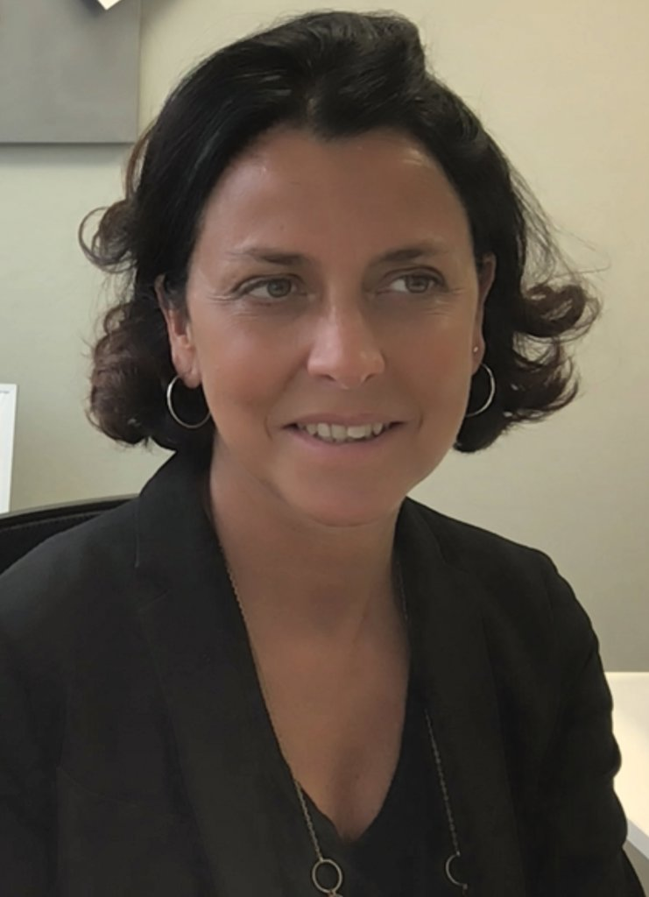

|  |
|
Short Bio
Valentina Emiliani is a CNRS research director at the Vision Institute in Paris. After a PhD in physics at La Sapienza University (Rome) and a postdoctoral fellowship at the Max Born Institute (Berlin) and at the European Laboratory for Nonlinear Spectroscopy (Florence) she joined in 2002 the Institute Jacques Monod (Paris). In 2005 she received the European Young Investigator grant and formed the Wavefront Engineering Microscopy group at Paris Descartes University. In 2019, she moved with her team to the Vision Institute, where she also directs the Photonics Department. Valentina and her group have pioneered the use of wave-front engineering for neuroscience. Precisely, they have combined approaches such as computer-generated holography, generalized phase contrast and temporal focusing with optogenetics to control neuronal activity with unprecedent spatiotemporal precision. Their findings paved the way to optogenetic manipulation of intact brain circuits with single cell resolution: an essential methodology to perturb and activate neural circuits for interrogating brain function. She has received the Award "Coups d'élan pour la recherche française" from the Bettencourt-Shueller foundation in 2015, the Axa Chair in 2017, the ERC advanced Grant in 2021, the "Médaille d'argent" from CNRS and the Maxime Dahan Prize in 2021. She received the Michael S. Feld Biophotonics Award in 2022.
Abstract of Talk
The genetic targeting of neuronal cells with activity reporters, such as calcium or voltage indicators, has driven a paradigmatic shift in neuroscience, where photons have replaced electrons in reading large-scale brain activities at cellular resolution. Simultaneously, optogenetics has shown that targeting neuronal cells with photosensitive microbial opsins enables the transduction of photons into electrical currents of opposing polarities. This allows for the activation or inhibition of neuronal signals in a minimally invasive manner. These advances have, in turn, spurred the development of sophisticated wavefront-shaping techniques to enable "all-optical" interrogation of deep brain circuits with high spatial and temporal resolution across large volumes. In this presentation, we will discuss the most recent approaches that we have recently proposed to enhance the capacity for patterned all-optical circuit manipulation. These approaches enable efficient in vivo two-photon multitarget optogenetic photostimulation and voltage imaging in both head-fixed and freely moving mice. As an example of patterned optogenetics, we will present a recent experiment demonstrating high-throughput connectivity mapping in the mouse visual cortex.